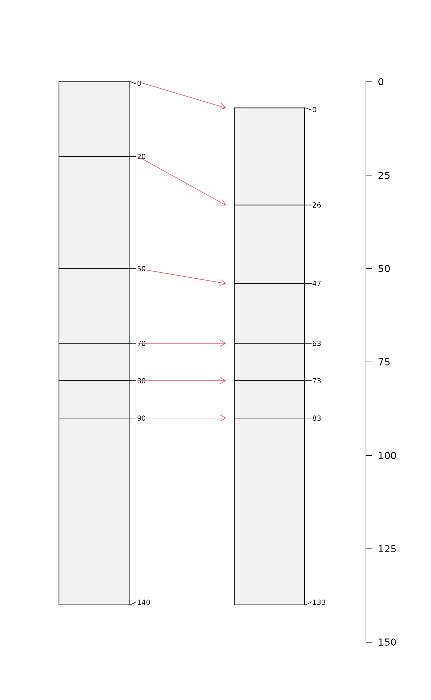

This function applies a warping factor to the horizons of a single-profile SoilProfileCollection object. Warping values >1 will inflate horizon thickness, values <1 will deflate horizon thickness.
warpHorizons(x, fact, updateProfileID = TRUE, suffix = "-w")Arguments
- x
a
SoilProfileCollectionobject- fact
numeric or character; warping factor specified as a single numeric value, vector of numeric values (length = nrow(x)), or column name of a horizon level attribute containing numeric values
- updateProfileID
logical; modify profile IDs
- suffix
character; suffix added to profile IDs when
updateProfileID = TRUE
Value
a modified version of x, SoilProfileCollection object
Examples
# create an example profile
s <- quickSPC('p1:AA|Bt1Bt1Bt1|Bt2Bt2B|Bt3|Cr|RRRRR')
# warp each horizon
# values > 1: inflation
# values < 1: deflation (erosion / compaction)
s.w <- warpHorizons(s, fact = c(1.3, 0.7, 0.8, 1, 1, 1))
# combine original + warped
x <- combine(s, s.w)
# compute profile bottom depths
.bottoms <- x[, , .LAST, .BOTTOM]
# change in total depth after warping
# used to vertically offset the warped profile
.yoff <- c(0, .bottoms[1] - .bottoms[2])
# depths for line segments connecting horizon tops
.y1 <- x[1, , .TOP]
.y2 <- x[2, , .TOP] + .yoff[2]
# sketches
# can't automatically add a depth axis
par(mar = c(0.5, 0, 0, 2))
plotSPC(
x,
name.style = 'center-center',
cex.names = 0.8,
width = 0.2,
max.depth = 150,
depth.axis = list(line = -3),
y.offset = .yoff
)
#> depth axis is disabled when more than 1 unique y offsets are supplied
# illustrate warping with arrows
arrows(x0 = 1 + 0.25, y0 = .y1, x1 = 2 - 0.25, y1 = .y2, len = 0.1, col = 2)
# manually add depth axis
axis(side = 4, line = -3.5, las = 1, at = seq(from = 0, to = 150, by = 25))

# apply to multiple profiles
# text-based template
.template <- c(
'P1:AAA|BwBwBwBw|CCCCCCC|CdCdCdCd',
'P2:ApAp|AA|E|BhsBhs|Bw1Bw1|CCCCC',
'P3: A|Bt1Bt1Bt1|Bt2Bt2Bt2|Bt3|Cr|RRRRR'
)
# each horizon label is '10' depth-units (default)
s <- quickSPC(.template)
# random warping factor, by horizon
s$f <- runif(n = nrow(s), min = 0.8, max = 1.2)
# warp horizons by profile, result is a list of SPCs
s.w <- profileApply(s, FUN = warpHorizons, fact = 'f')
# flatten list -> SoilProfileCollection
s.w <- combine(s.w)
# combine with original SPC
x <- combine(s, s.w)
# sketches
par(mar = c(0.5, 0, 0, 2.5))
plotSPC(
x,
name.style = 'center-center',
cex.names = 0.8,
width = 0.3,
max.depth = 165,
depth.axis = list(line = -2)
)